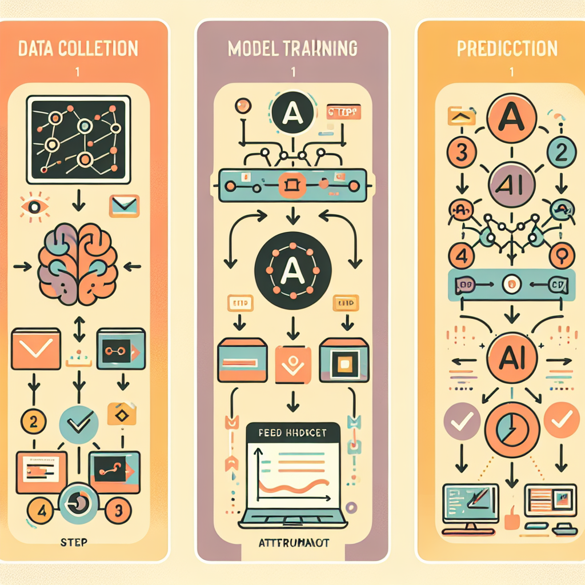
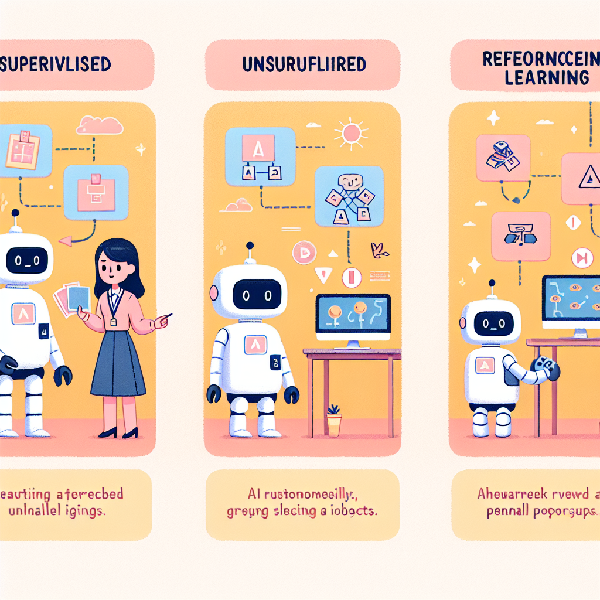

2장. 인공지능은 어떻게 학습하는가¶
들어가며¶
"기계는 경험으로부터 배울 수 있어야 한다." — 앨런 튜링 (Alan Turing, 컴퓨터 과학의 아버지)
여러분은 자전거를 처음 배울 때를 기억하나요? 처음에는 넘어지고, 또 넘어지고, 수십 번의 실패를 반복하다가 어느 순간 "아, 이렇게 하면 되는구나!" 하고 몸이 기억하게 됩니다. 부모님이 "페달을 이렇게 밟아야 해, 핸들은 이렇게 잡아야 해"라고 모든 것을 설명해 주지 않아도, 직접 경험하면서 스스로 균형 잡는 법을 터득하죠.
인공지능도 사람과 놀랍도록 비슷한 방식으로 배웁니다.
다만 사람이 경험을 통해 배우듯, AI는 데이터를 통해 배웁니다. 수백만 개의 고양이 사진을 보여주면 고양이를 알아보는 법을, 수천 가지 바둑 기보를 학습하면 바둑 두는 법을 스스로 익혀 나가죠.
이번 장에서는 AI가 어떤 방식으로 학습하는지, 그 핵심 원리를 함께 파헤쳐 보겠습니다. 지도학습, 비지도학습, 강화학습이라는 세 가지 학습 방법을 이해하고 나면, 여러분 주변의 AI 서비스들이 완전히 다르게 보일 거예요.
📋 학습 목표¶
[!NOTE] 이 챕터를 마치면 여러분은 다음을 할 수 있습니다.
- 🎯 AI 학습의 세 가지 유형(지도학습, 비지도학습, 강화학습)의 원리를 설명할 수 있다.
- 🔍 각 학습 유형의 특징을 비교하고, 실생활에서의 적용 사례를 찾을 수 있다.
- 📊 데이터가 AI 학습에 미치는 영향을 구체적인 예시를 들어 설명할 수 있다.
- 💻 간단한 분류 문제를 통해 AI 학습 원리를 직접 체험할 수 있다.
🚀 도입 활동: AI처럼 생각해보기¶
[!TIP] [활동] 나도 AI다! (5분)
다음 게임을 해봅시다. 아래 과일 목록을 보고, 여러분만의 기준으로 두 그룹으로 나눠보세요.
🍎 사과 / 🍌 바나나 / 🍇 포도 / 🍊 귤 / 🍋 레몬 / 🍓 딸기 / 🫐 블루베리 / 🥭 망고
질문: - 어떤 기준으로 나눴나요? (색깔? 크기? 맛? 모양?) - 옆 친구와 비교해보세요. 같은 결과가 나왔나요? - 만약 누군가 "빨간 것과 아닌 것으로 나눠줘"라고 미리 알려줬다면 어떻게 달라졌을까요?
이 세 가지 상황이 바로 지도학습, 비지도학습, 강화학습의 차이와 연결됩니다!
1. AI 학습의 기본 원리: 데이터가 전부다¶
1.1 사람의 학습 vs AI의 학습¶
사람은 어떻게 '개'와 '고양이'를 구별할까요? 어릴 때부터 수많은 개와 고양이를 직접 보고, "이건 개야", "이건 고양이야"라는 말을 들으면서 자연스럽게 차이를 학습합니다. 귀 모양, 울음소리, 행동 패턴 등 다양한 특징을 뇌가 자동으로 정리하죠.
AI도 마찬가지입니다. 단, AI에게 '경험'은 곧 데이터입니다.
| 구분 | 사람의 학습 | AI의 학습 |
|---|---|---|
| 학습 재료 | 경험, 감각, 감정 | 데이터 (숫자, 이미지, 텍스트 등) |
| 학습 방법 | 관찰, 반복, 교육 | 알고리즘을 통한 패턴 인식 |
| 학습 속도 | 비교적 느림 | 매우 빠름 (수억 개 데이터 처리 가능) |
| 창의적 이해 | 가능 | 제한적 |
| 새로운 상황 대처 | 유연하게 가능 | 학습 범위 내에서만 가능 |
1.2 AI 학습의 3단계 과정¶
AI가 무언가를 배우는 과정은 크게 세 단계로 나눌 수 있습니다.
① 데이터 수집: AI가 배울 재료를 모읍니다. 이미지, 텍스트, 숫자 등 다양한 형태가 될 수 있습니다.
② 모델 학습: 알고리즘이 데이터 속 패턴을 찾아냅니다. 틀리면 틀린 만큼 스스로 수정하며 반복합니다.
③ 예측 및 판단: 새로운 데이터가 들어왔을 때 배운 것을 바탕으로 답을 냅니다.
이 순환 과정이 수백만 번 반복되면서 AI는 점점 더 똑똑해집니다.

2. 세 가지 학습 유형¶
AI가 학습하는 방식은 크게 세 가지로 나뉩니다. 각각의 방식은 목적과 데이터의 형태에 따라 선택됩니다.
2.1 지도학습 (Supervised Learning)¶
🏫 "선생님이 정답을 알려주며 가르치는 방식"¶
지도학습은 마치 정답지가 있는 시험 공부와 같습니다. 문제와 정답을 함께 제시하면서 AI를 훈련시키는 방식이죠.
📌 핵심 개념: - 입력(Input): 학습에 사용할 데이터 (예: 이메일 내용) - 레이블(Label): 각 데이터의 정답 (예: "스팸" 또는 "정상") - 목표: 새로운 입력이 들어왔을 때 정확한 레이블을 예측하는 것
📌 동작 원리:
📌 지도학습의 두 가지 유형:
| 유형 | 설명 | 예시 |
|---|---|---|
| 분류(Classification) | 데이터를 정해진 카테고리로 나눔 | 스팸 메일 분류, 암 진단, 손글씨 인식 |
| 회귀(Regression) | 연속적인 수치를 예측 | 집값 예측, 기온 예측, 주가 예측 |
📌 실생활 예시: - 📧 스팸 메일 필터: 수천 개의 스팸/정상 메일을 학습 → 새 메일이 스팸인지 판단 - 🏥 의료 진단: 수만 개의 X-ray 사진과 진단 결과를 학습 → 새 X-ray에서 이상 탐지 - 🗣️ 음성 인식: 수백만 개의 음성 데이터와 텍스트를 학습 → 말을 글자로 변환
[!WARNING] 지도학습의 한계점
지도학습은 강력하지만, 레이블이 달린 데이터가 반드시 필요합니다. 문제는 이런 데이터를 만드는 데 엄청난 시간과 비용이 든다는 점이에요. 수만 장의 의료 사진 하나하나에 "암 세포 있음/없음"을 표시하려면 전문 의사가 직접 확인해야 합니다. 이를 레이블링(Labeling) 또는 어노테이션(Annotation) 작업이라고 하며, AI 개발 비용의 상당 부분을 차지합니다.
2.2 비지도학습 (Unsupervised Learning)¶
🔍 "정답 없이 스스로 패턴을 찾는 방식"¶
비지도학습은 마치 정답지 없이 스스로 공부하는 것과 같습니다. 앞선 도입 활동에서 여러분이 아무 기준 없이 과일을 분류했던 것처럼, AI도 정답 없이 데이터 속에서 스스로 패턴과 구조를 찾아냅니다.
📌 핵심 개념: - 입력(Input): 레이블이 없는 데이터만 제공 - 목표: 데이터 속에 숨어 있는 패턴, 구조, 그룹을 스스로 발견 - 레이블(Label): ❌ 없음
📌 비지도학습의 대표적인 방법:
| 방법 | 설명 | 예시 |
|---|---|---|
| 군집화(Clustering) | 비슷한 데이터끼리 그룹으로 묶기 | 고객 유형 분류, 유전자 분석 |
| 차원 축소(Dimensionality Reduction) | 복잡한 데이터를 단순하게 압축 | 이미지 압축, 데이터 시각화 |
| 이상 탐지(Anomaly Detection) | 일반적인 패턴과 다른 것 찾기 | 신용카드 사기 탐지 |
📌 실생활 예시: - 🛒 유통업체 고객 분류: 구매 패턴을 분석해 "가성비 추구 고객", "프리미엄 선호 고객" 등 그룹을 자동으로 발견 - 🎵 음악 스트리밍 서비스: 비슷한 취향의 음악을 자동으로 묶어 플레이리스트 생성 - 🔬 유전자 연구: 유전자 데이터에서 공통 패턴을 찾아 질병 원인 연구
[!TIP] 지도학습 vs 비지도학습, 쉽게 구분하는 법
🍎 지도학습: "선생님이 '이건 사과, 이건 배'라고 알려주면서 가르쳐 줌" → 정답(레이블)이 있는 상태에서 학습
🤔 비지도학습: "과일 바구니를 주면서 '알아서 정리해봐'라고만 함" → 정답(레이블) 없이 스스로 패턴 발견
2.3 강화학습 (Reinforcement Learning)¶
🎮 "보상과 벌칙으로 최선의 행동을 찾는 방식"¶
강화학습은 앞선 두 방식과 완전히 다릅니다. 마치 게임을 하면서 고득점 방법을 스스로 터득하는 것처럼, AI는 시행착오를 통해 '어떤 행동이 더 좋은 결과를 가져오는지'를 스스로 학습합니다.
📌 핵심 개념:
- 에이전트(Agent): 학습하는 AI 자체 (예: 게임 캐릭터를 조종하는 AI)
- 환경(Environment): AI가 상호작용하는 세계 (예: 게임 화면)
- 행동(Action): AI가 내리는 결정 (예: 왼쪽으로 이동)
- 보상(Reward): 행동의 결과로 받는 점수 (긍정적/부정적)
- 목표: 장기적으로 보상을 최대화하는 전략을 찾기
📌 강화학습의 작동 원리:
🎮 예시: AI가 슈퍼마리오를 배우는 경우
- AI가 "점프" 행동을 선택함
- 구덩이를 피하면 → ✅ +10점 보상
- 구덩이에 빠지면 → ❌ -10점 벌칙
- 이 과정을 수천 번 반복하면서 "언제 점프해야 구덩이를 피하는가"를 학습
- 결국 스스로 게임을 클리어하는 전략을 완성!
📌 실생활 예시: - ♟️ 알파고(AlphaGo): 수백만 번의 자체 대국을 통해 바둑 최강자가 됨 - 🚗 자율주행 자동차: 수많은 시뮬레이션에서 안전한 주행 전략을 학습 - 🤖 로봇 공학: 로봇이 스스로 넘어지지 않고 걷는 방법을 터득 - 💬 ChatGPT 등 생성형 AI: 사람의 피드백을 보상으로 삼아 더 나은 답변 학습 (RLHF)

3. 세 가지 학습 유형 종합 비교¶
지금까지 배운 세 가지 학습 유형을 한눈에 비교해봅시다.
| 구분 | 지도학습 | 비지도학습 | 강화학습 |
|---|---|---|---|
| 정답 데이터 | ✅ 필요 | ❌ 불필요 | ❌ 불필요 |
| 학습 방식 | 정답과 비교하며 수정 | 스스로 패턴 발견 | 보상/벌칙을 통한 시행착오 |
| 주요 목적 | 분류, 예측 | 군집화, 패턴 탐색 | 최적 행동 전략 수립 |
| 대표 알고리즘 | 결정 트리, SVM, 신경망 | K-평균, 오토인코더 | Q-러닝, PPO |
| 실생활 예시 | 스팸 필터, 의료 진단 | 고객 세분화, 추천 시스템 | 게임 AI, 자율주행 |
| 장점 | 정확도 높음 | 레이블 불필요 | 복잡한 전략 학습 가능 |
| 단점 | 레이블 작업 비용 高 | 결과 해석 어려움 | 학습 시간 오래 걸림 |
4. 데이터: AI 학습의 핵심 연료¶
4.1 "쓰레기를 넣으면 쓰레기가 나온다" (Garbage In, Garbage Out)¶
AI 학습에서 가장 중요한 것은 단연 데이터의 품질입니다. 아무리 뛰어난 알고리즘도 잘못된 데이터로 학습하면 엉터리 결과를 냅니다.
📰 실제 사례: 아마존의 AI 채용 시스템 (2018년)
아마존은 이력서를 자동으로 평가하는 AI를 개발했습니다. 그런데 이 AI는 여성 지원자를 지속적으로 낮게 평가하는 문제가 발생했어요. 이유는 학습 데이터 때문이었습니다. 과거 10년간 아마존 직원의 대부분이 남성이었기 때문에, AI는 "남성적 특징 = 우수한 지원자"라는 편향을 스스로 학습해버린 것이죠. 결국 아마존은 이 시스템을 폐기했습니다.
이처럼 데이터 편향(Data Bias) 은 AI가 잘못된 판단을 내리게 하는 심각한 문제입니다.
4.2 좋은 데이터의 조건¶
[!WARNING] 데이터와 AI 윤리
AI 학습에 사용되는 데이터는 단순히 '많고 정확하면 좋다'에서 그치지 않습니다. 다음과 같은 윤리적 고려가 반드시 필요합니다.
- 개인정보 보호: 학습 데이터에 개인 식별 정보가 포함되어서는 안 됩니다.
- 편향 방지: 특정 성별, 인종, 지역에 치우친 데이터는 차별적 AI를 만들 수 있습니다.
- 동의와 투명성: 데이터를 제공한 사람들이 자신의 데이터가 AI 학습에 사용된다는 것을 알고 동의했어야 합니다.
5. 💻 실습: AI 분류 체험하기¶
이제 직접 AI 학습 원리를 체험해봅시다! Python을 사용해 간단한 분류 문제를 풀어보겠습니다. 꽃의 특징을 학습해 종류를 분류하는 AI를 만들어볼 거예요.
[!TIP] 실습 환경 안내
- 권장 환경: Google Colab (별도 설치 없이 브라우저에서 바로 사용 가능)
- 접속 방법: colab.research.google.com → 새 노트북 만들기
- Python과 scikit-learn 라이브러리를 사용합니다.
실습 5-1: 데이터 살펴보기¶
# 필요한 라이브러리 불러오기
from sklearn.datasets import load_iris
from sklearn.model_selection import train_test_split
import pandas as pd
# 붓꽃(Iris) 데이터셋 불러오기
# 이 데이터셋은 AI 학습의 대표적인 연습용 데이터입니다
iris = load_iris()
# 데이터를 보기 쉬운 표 형태로 변환
df = pd.DataFrame(iris.data, columns=iris.feature_names)
df['species'] = [iris.target_names[i] for i in iris.target]
# 처음 10개 데이터 확인
print("📊 붓꽃 데이터셋 (처음 10개)")
print("=" * 60)
print(df.head(10))
print(f"\n📌 전체 데이터 수: {len(df)}개")
print(f"📌 꽃의 종류: {list(iris.target_names)}")
print(f"📌 특징(feature): {list(iris.feature_names)}")
출력 결과:
📊 붓꽃 데이터셋 (처음 10개)
============================================================
sepal length (cm) sepal width (cm) petal length (cm) petal width (cm) species
0 5.1 3.5 1.4 0.2 setosa
1 4.9 3.0 1.4 0.2 setosa
2 4.7 3.2 1.3 0.2 setosa
...
📌 전체 데이터 수: 150개
📌 꽃의 종류: ['setosa' 'versicolor' 'virginica']
📌 특징(feature): ['sepal length (cm)', 'sepal width (cm)', 'petal length (cm)', 'petal width (cm)']
실습 5-2: AI 모델 학습시키기¶
from sklearn.tree import DecisionTreeClassifier
from sklearn.metrics import accuracy_score
# ① 데이터 분리: 학습용 80% / 테스트용 20%
# AI도 모의고사(학습 데이터)로 공부하고, 실전 시험(테스트 데이터)을 봅니다!
X_train, X_test, y_train, y_test = train_test_split(
iris.data, # 입력 데이터 (꽃의 특징)
iris.target, # 정답 데이터 (꽃의 종류)
test_size=0.2,
random_state=42
)
print(f"📚 학습 데이터: {len(X_train)}개")
print(f"📝 테스트 데이터: {len(X_test)}개")
# ② AI 모델 만들기 (결정 트리 알고리즘 사용)
model = DecisionTreeClassifier(random_state=42)
# ③ 모델 학습 - 이 한 줄이 AI 학습의 핵심!
model.fit(X_train, y_train)
print("\n✅ AI 학습 완료!")
# ④ 테스트 데이터로 예측
predictions = model.predict(X_test)
# ⑤ 정확도 측정
accuracy = accuracy_score(y_test, predictions)
print(f"\n🎯 AI 정확도: {accuracy * 100:.1f}%")
출력 결과:
실습 5-3: 내 꽃을 직접 분류해보기¶
```python import numpy as np
새로운 꽃 데이터를 직접 입력해 분류해보기¶
print("🌸 새로운 꽃을 분류해볼까요?") print("-" * 40)
새로운 꽃 데이터 (꽃받침 길이, 꽃받침 너비, 꽃잎 길이, 꽃잎 너비)¶
new_flower = np.array([[5.0, 3.5, 1.5, 0.3]]) # 여기 값을